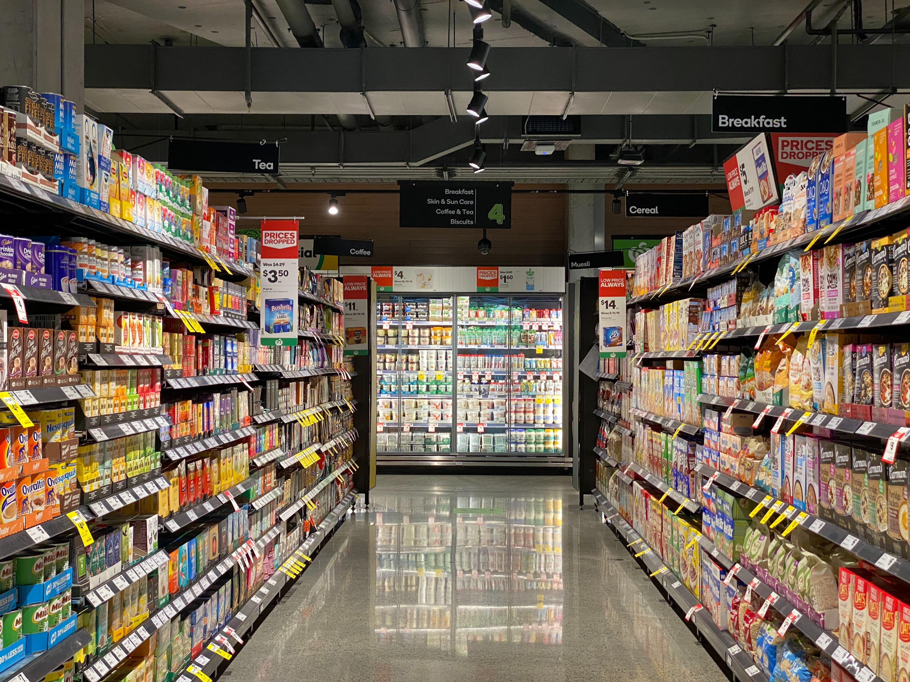

Nutri-Score
Learn more
The Nutri-Score grade is determined by the amount of healthy and unhealthy nutrients:
- Negative points: energy, saturated fat, sugars, sodium (high levels are considered unhealthy)
- Positive points: the proportion of fruits, vegetables and nuts, of olive, colza and nut oils, of fibers and proteins (high levels are considered good for health).
NOVA Group
Learn more
The NOVA classification assigns a group to food products based on how much processing they have been through:
- Group 1: Unprocessed or minimally processed foods
- Group 2: Processed culinary ingredients (e.g. oils, butter, sugar, salt)
- Group 3: Processed foods (e.g. bottled vegetables, canned fish, fruits in syrup, cheeses, and freshly made bread)
- Group 4: Ultra-processed food and drink products (e.g. soft drinks, sweet or savoury packaged snacks, reconstituted meat products and pre-prepared frozen dishes)
Packaging
Ingredients
| Ingredient | Vegan |
|---|